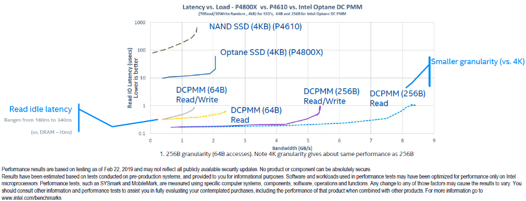
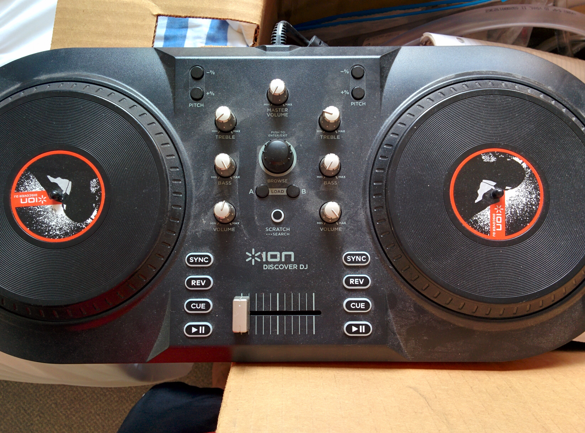
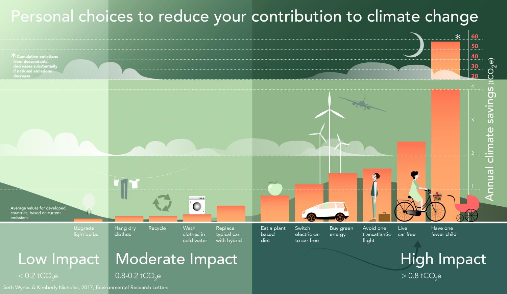
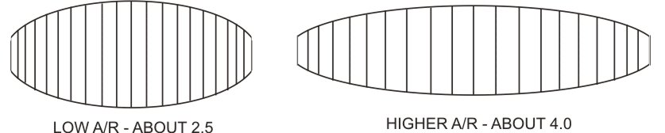
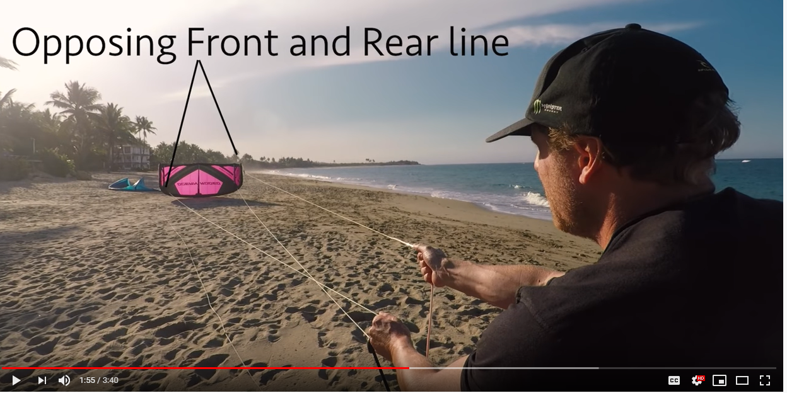

Table of Contents
Sealant Tubes
Have the sealant at the tip, (no air). Then just add a nail after done so that it seals the top somewhat and provides an easy way to pull out and have a path for sealant.
Another option is to have a straight top like a toothpaste tube, but there's probably a good reason it's tapered. Probably less overall friction to overcome?
Also just use the cheap big tube. $5 at walmart. Need a pusher thing, but those are cheap too.
Jae 1040NR Tax Return
Free sites are TaxAct and Onlinetaxes.com, but they don't do 1040NR-EZ. Probably shouldn't matter.
3D Printing
Probably somewhere else, but wanted to drop here how to do better than pixel rendering.
https://3dprint.com/144817/dlp-sub-pixel-resolution/
You might also be able to do a moving of the projector, but that sounds kinda expensive.
$3k though for a DLP 3d printer in UV. Seems pretty cheap.
Security Camera
$50 for pack of 2 on amazon. Wifi + SD card, managed through phone unfortunately, but cheap.
- Isn't afraid of changing its own MAC address to get a new IP address from your router to phone home to China. Still don't have a good explanation / reasoning for this.
- Even if you record outside video, that doesn't limit it from hacking computers in your LAN. Time to secure your network!
- Probably place it with a separate router / firewall and block all attempts to the WAN?
- They have a RTSP firmware that lets you stream video. Cool!
Filming notes
Although some movies and tv shows feature a seemingly shoulder-held camera with small jerky motions, most of the YouTubers I've seen don't do so. For “studio” shots, use a steady tripod.
Keep the object not moving too. Easy to look at closer.
Exude the positive side of yourself. Be visibly and audibly happy! People will be watching it over and over, so might as well make it interesting and uplifting.
Might need to upgrade Sony Vegas for higher res?
Arxiv
Pretty cool project. They're working on making it sustainable economically and technically.
Arxiv Sanity: http://www.arxiv-sanity.com/, great way to browse through papers.
Another one, semantic scholar: https://www.semanticscholar.org/
Stuff to buy
- Earbuds
- Bike horn + waterproof button + mount + switch for battery pack
Back raises
Talk with athletic folks at Intel, maybe Mack too. Not sure why I want stronger lower back muscles, just like the idea.
Need a roman chair / hyperextension thing.
{kind=link}
- Doesn't count. It's a preacher curl thing.
Found roman chair for $40 used.
Brands to search for used are “weider|gym|marcy|weight”.
Carbonation
Carbonator
Commercial systems (restaurants) use a carbonator, which:
There are several pressurised vessels required to make the whole process work properly. A deaerator vessel removes dissolved oxygen. Next, the saturator vessel is equipped with a secondary branch line. This pipe connects to the CO2 tank. Pressure variables alter, valves turn, and a small-pored interface distributes the injected gas until it saturates the beverage, and be it a sparkling wine or the newest energy drink to hit the market.
$250 on craigslist, this cool video somehow found them for $100. YouTube Link! https://www.youtube.com/watch?v=iQJMBSQwndM
- Unfortunately you need a source of very cold water for best carbonation. Which it sometimes takes a little bit to get the fresh stuff from pipes.
- Maybe try the one at intel, see how bad it is. But people want it cold.
Call Pitman Restaurant equipment, used. (503) 238-0634. Otherwise they're on ebay for $100. Cool!
- Also ask about used CO2 tank.
Kegman is good resource for all this: https://www.kegman.net/pages/Seltzer-Tips.html
Motorless Carbonator
Not as good, I think. Still pretty spendy new. But it works when there's no electricity. You just need ice to keep it cool!
2 liter bottle
Use 2 liter bottle and shake for 30 seconds to 1 minute. Pretty cheap to get started, no lost money. All parts are reusable, except the 2 liter bottle head. $15 shipped, stainless steel and it'll work.
View Firefox in Mobile
Ctrl-Shift-M is temporary.
Otherwise go with a permanent user-agent spoofer: https://addons.mozilla.org/en-US/firefox/addon/uaswitcher/
Engineering Notes
If you have separate clocks, make sure they're synced occasionally.
Fridge vs. Freezer
I think it has to do more with pull-open door that lets cold air out vs. “treasure chest” door (typically freezers) that don't let cold air out.
And make sure to get more modern ones because they are somehow more efficient. https://www.frugalwoods.com/2015/09/04/why-buying-a-chest-freezer-is-saving-us-serious-money/
Fun stuff to do
Some on other lists like hiking.
Only $25 for 1.5 hours at Sky High in Tigard (trampolines and flips, as well as climbing)
Optane DC Persistent Memory
2GB/s max sequential bandwidth from flash. However, it really kicks butt on random 4K reads. Latency is through the roof for flash but … reasonable? for DDRT. 
{kind=link}
Questions for Senior Fellow Rick Coulson
He had conviction that SSDs were a big deal. But unproven yet. Important to keep working on them and not get distracted by DVD decryption chips.
Intel executives did/do? a good job of taking risks. $100 million for a 10% chance at a multi-billion business? Make the bet every time with no remorse after the fact. Apparently a new CEO can change that vibe.
Flat vs. heirarchical that Werner Haas was referring to on the plane was in reference to the indirection table. Great article here: https://www.anandtech.com/show/6432/the-intel-ssd-dc-s3700-intels-3rd-generation-controller-analyzed. Also performance results here, astounding: https://www.anandtech.com/show/6433/intel-ssd-dc-s3700-200gb-review/3
- Normally people use a flat table, which is simple for implementation and really fast. Great tail latency.
- However, you can use smaller space (cost savings) by switching to a tree structure and …. something about average latency. The 2nd gen Intel SSD implemented this, but it tanked tail latency when it came time to rebalance the tree. Look this up, wonder what other benefits the tree had.
- Apparently it doesn't matter for Optane? Not sure why. We use a flat AIT regardless.
- Indirection table is both used for wear leveling and for making sure to write to already cleared regions because clearing takes time. Right?
Crystal Ridge project has suffered from changing architects over the years. Some things get transferred, but a lot of the reasons for doing things can get lost.
He doesn't feel that the FLUSH instructions that are currently done in Crystal Ridge are necessary. They require you to flush every time you want to make sure data gets to the dimm.
- Why not just flush on power off? Especially for the server context, the data is stored in triplicate in other places and you have power banks.
- Apparently wasn't easy to guarantee for all customers, so they went with telling everyone to do it in software.
- Can you DIY it though by not using the flush instruction and flush yourself when power off?
Important to finish the job you're on, see it through to customers and completion. Don't leave mid-way and only work 2 years on Crystal Ridge.
Graphene
Very thermally conductive.
Can make somewhat simply, see method 4. http://www.graphene-battery.net/graphene.htm
Solar Power off grid
Hard to operate (a house) off grid / add energy back to grid. Hacker News article was great: https://news.ycombinator.com/item?id=17659294
On the other hand, this article demos small items. https://news.ycombinator.com/item?id=14821478
Sore Throat
Mouthwash doesn't help. Listerine (26% alcohol) claimed it for a while, but was found to be incorrect. https://en.wikipedia.org/wiki/Listerine
In theory a high enough alcohol concentration with sufficient exposure to gut or oral tissue could kill bacteria but will in all likelihood also damage the gut lining.
Dentist
There's bacteria in your mouth. They produce milky stuff called plaque. By brushing you physically break up and manage the bacteria and the plaque. Mouthwash can help, but it's not as good as physical agitation when you have multiple layers of bacteria (it'll only kill the top layer).
When you miss spots or when you let it sit unbrushed for more than 24 hours, then the plaque turns into “calculus”, the hard stuff. It's important to get cleanings every 6 months both for inspecting your teeth as well as cleaning off this calculus, because calculus growth increases, bacteria can keep everything going and eat away your bone, etc. So cleanings are important, and not primarily from a looks standpoint. Cool!
Need to fix up retainers (adding silicone dental wax/putty stuff) and probably wear them more often than every 6 months. If there are still issues, call the dentist back.
Insurance stopped support of two dentist inspections, only one per year. Hope they can manage that.
Open Water
by Mary Lou Jepsen and team
Great intro TED talk: https://www.youtube.com/watch?v=awADEuv5vWY
Computer History Museum: https://www.youtube.com/watch?v=_ExVOfRCYOY
Read the patent: https://patentimages.storage.googleapis.com/84/ce/9b/f32d64967da9f2/US9730649.pdf
Frequency shift?
Use ultrasonic transducers to squish the object, which changes the phase. But how to change frequency?
Intel Instruction Set Spec
https://software.intel.com/sites/default/files/managed/39/c5/325462-sdm-vol-1-2abcd-3abcd.pdf
Maciej thing, not sure if/when we'll get to: https://software.intel.com/en-us/articles/x87-and-sse-floating-point-assists-in-ia-32-flush-to-zero-ftz-and-denormals-are-zero-daz
Fix grandpa's drill
Milwaukie drill. All that's wrong is the switch. Technician said “maybe you need a new drill” >.< These parts are probably pretty cheap! Bummer…
Milwaukie
Catalog?: 0228-I
Serial Number: 0689345596
Call the Seattle number (800) 729-3878, and ask for a Technician. Technicians are available from 7:30AM to 5pm Central time.
Need to get catalog number and serial number.
206-762-8430 (Seattle), or 415-761-2851 (SF), 415-583-8484.
Get parts from Tyco/TE. They no longer manufacture them, even though they have the catalog on their website still.
1-800-722-1111
customercare@te.com
toolingsales@te.com
Gypsy Guide
Travel with your phone. Offline and GPS triggered, go at your own pace! Pretty cool, and lots of good reviews.
Price is Right Rigging
Apparently there's pretty stiff penalties?? It'd be an interesting acoustic study.
https://thecomeback.com/pop-culture/rigged-not-five-straight-1-wheel-winners-price-right.html
Audio Analysis
https://www.youtube.com/watch?v=hp1a0BHmyc0 the one in question.
One that clearly brakes immediately. https://www.youtube.com/watch?v=0JTCWxjwQjM
“Normal” one (although could be modified too): https://www.youtube.com/watch?v=Veoh3TWLDus
Download from Dropbox! https://www.dropbox.com/sh/hj57h7cs9hp9exu/AAAUG-6LRQP4GpwzOlxv9WA2a?dl=0
490 Hz square wave: https://szynalski.com/tone#490,squ,v0.75
What is the graph of force on the wheel over time? Maybe show diff over time, but that's not sensitive enough.
Penalties for quiz show, haven't found it exactly yet, but $64,000 question started everything. https://www.pbs.org/wgbh/americanexperience/films/quizshow/#transcript
Home Thermostat
Dad says it's pretty straightforward to program. Cool.
If it wasn't there's rebates on new ones. https://www.portlandgeneral.com/residential/energy-savings/thermostats/smart-thermostat-programs
Strobe light on phone
Only accurate to about 80hz. Beyond that it wasn't designed for it. Booo
Freezing liquids
Just fill to 3/4 and leave the lid off, maybe cover with something else if ocd. Duh.
Camping
Can rent a 4-person camper for $69 a night, delivered?! A lot cheaper than buying it. Ask Darin for advice, Airbnb?
DIY Li-Ion Pack
Didn't know you could just solder the tops. Creates some problems long term though, probably.
Drone
Pretty cool vertical takeoff and landing. Needed for bigger batteries and longer flights. Although you'd think it wouldn't be that hard to add some small wheels that flip down…
YouTube Link! https://www.youtube.com/watch?v=3HEx9Nbb8nc
Looks like plenty of competition (not just this) for the Oregon Honeycomb company. Wow…
Things I don't need to do again
Food
Bacon. Way too expensive relative to ham, on top of that most of it is fat. Why do people buy this stuff?!
Sushi. Good and filling if you make it yourself, but $10 for a roll…no way. Look up how to make a sumo roll and DIY.
The future
World Bank guy talk. Wealth distribution of 80% rich countries to 20% poorer countries is changing to 35% rich countries and 65% poorer countries. Mainly Africa, India, China, Brazil. And not the U.S. anymore and definitely not Europe. Interesting. YouTube Link! https://www.youtube.com/watch?v=6a0zhc1y_Ns
Should put the fiber optic future video here too
South Pole living
Part of me wants to experience really cold weather for a while. Here are some IT positions for 5 summer months, but other positions are here too: https://www.leidos.com/competencies/operations-and-logistics/antarctic-support-contract
Sesame Street Dog in Credits
His name is Barkley. Pretty cool puppetry…
YouTube Link! https://www.youtube.com/watch?v=dDA9SzbHsNo
Dance
Ok, I sorta get it now. Emu's pink windmill kids. British kids show.
YouTube Link! https://www.youtube.com/watch?v=XNkgXvu4Ieg YouTube Link! https://www.youtube.com/watch?v=1svA2sGhDEE
Blu-ray video
Why does it still look compressed in motion scenes?
Sorta helpful side video…
- Hmmm, just standard 1080p video is 1.~ gigabits / second. Well, so much for capturing a 4K movie in 50GB Blu-ray disc. But doesn't it use a variable bit rate??
Decathlon order
Sandals, two pairs. One nice for office.
Waist is 35“, lower hip is 40”. So larger medium or smaller large. I'll go with large and cinch it down.
- Get black so sweat doesn't show as much. Don't want thick as it won't dry out as fast
Foot is 10 3/4“. Old sandals (quechua 50) are size 43 european.
The running shoes I was thinking of getting only have partial rubber outsole, boo.
{kind=link}
- Gotta upgrade to the $20+ ones…
Do I need to wash my car?
For acidic things like bird poop sure, but in general the technology is much better apparently. But it'd be good to add a protective layer of wax once a year or so.
https://mechanics.stackexchange.com/questions/26936/do-i-really-need-to-wash-the-outside-of-my-car
Amazon price tracking
Used kites? However I have one now, hopefully it works good.
Showing land usage
Just what I was looking for! https://www.bloomberg.com/graphics/2018-us-land-use/
{kind=link}
The dark side of economics
Confessions of an economic hit man
- Basically government / US businesses take out other countries through big loans. And take out leaders if they refuse.
Also apparently the Creature from Jekyll Island
- While Wikipedia for this definitely says conspiracy theory, I wonder if it's obvious.
Facts
Intel sells 375 million “Intel Inside” stickers (and processors) a year. Wow, scary. Wonder if that includes Macs 
Home heating / cooling
I saw a ductless system at costco that pumps coolant temperature transferring fluid to basically radiators in each room. Kinda cool. Apparently cheaper too.
Might want to look into a heat pump so you can heat cheaply at the same time. Transfer the cold outside 
I remember mr money mustache used water piping to transfer heat through the floor, also more efficient. And lots of stone in house to have thermal mass. And south facing windows with curtains, etc. Interesting.
good books
Investing
Philosophy
They look sorta good, but need to return them and not too interested in reading right now in the summer. On Guard by William Lane Craig and G.K. Chesterton Orthodoxy
Homeless
Particularly one-time appearances outside of grocery stores. How can I help? It seems I don't want to help because I'm not sure if I will encourage bad behavior. Like…how is a middle eastern family showing up in America in the first place without a sponsor?
- Maybe I should head over there instead…
Water filter
Kind of important if I want to do longer hikes and don't want to carry a gallon jug of water. Hmmm…maybe try it and see how bad it is?
Using Sawyer Mini Filter now, so far so good. LifeStraw flex is similar, but adds a carbon filter (removes chlorine <taste>): https://www.lifestraw.com/products/lifestraw-flex
Virus elimination needs UV light: https://www.sciencedirect.com/science/article/pii/S147789391500174X
1st world
To get rid of bad hard water taste, apparently it's hard to beat the carbon water filter (brita) But appraently it doesn't do viruses or the pore size isn't small enough?
Sawyer mini looks good enough. People have problems with the gasket because they seem to tighten it too tight?
- Use as a gravity drip system with two “smart water” bottles or the pouch. https://www.amazon.com/gp/customer-reviews/R2JO13YV5FN15F/ref=cm_cr_arp_d_rvw_ttl?ie=UTF8&ASIN=B00FA2RLX2, https://www.amazon.com/gp/customer-reviews/R31FB7DD2EMLOS/ref=cm_cr_arp_d_rvw_ttl?ie=UTF8&ASIN=B00FA2RLX2
Mr. Ocker recommended first need, but there are others that seem just as good in terms of filter size <.1 microns
Don't want to use a straw, as relies on mouth to generate suction (tiring). Others use hand squeeze or pump. However they are heavier!
Beaver fever is filtered out by .5 microns and below.
Mr. also recommended a UV filter. 90 seconds sterilize.
3rd world
For 3rd world countries, f-sand works well. Combination of silica (sand) and moringa oleifera. Interesting bit of chemistry on why it works. (positive charges??)
The tree is cultivated for food and natural oils, and the seeds are already used for a type of rudimentary water purification. However, this traditional means of purification leaves behind high amounts of dissolved organic carbon (DOC) from the seeds, allowing bacteria to regrow after just 24 hours. This leaves only a short window in which the water is drinkable….By extracting the seed proteins and adsorbing (adhering) them to the surface of silica particles, the principal component of sand, she created f-sand. F-sand both kills microorganisms and reduces turbidity, adhering to particulate and organic matter. These undesirable contaminants and DOC can then be washed out, leaving the water clean for longer, and the f-sand ready for reuse?
Atlassian
Add search to sidebar: https://confluence.atlassian.com/doc/configure-the-sidebar-317194694.html
Myopia
Eye stuff. Turns out a lot of it has to do with little time outside.
The leading hypothesis is that light stimulates the release of dopamine in the retina, and this neurotransmitter in turn blocks the elongation of the eye during development.
- From a nice article in Nature: https://www.nature.com/news/the-myopia-boom-1.17120
Fred Meyer (Gas)
Credit Card (I think). Have to spend $100 total per month to get a discount. Works out to 1%. So not worth it.
However, just by scanning a rewards card you get $.03 per gallon off. Kinda cool. Doesn't exist! Not worth it!
DJ turntable
The brand I used before was ION Discover DJ.  Really nicely designed inside, used photo gates I think with teeth.
{kind=link}
Pizza / Bread
Double proofing the bread is a thing. As well as letting it rise in the fridge for between 3-5 days, apparently better. https://slice.seriouseats.com/2010/09/the-pizza-lab-how-long-should-i-let-my-dough-cold-ferment.html
Also, large or family size for 1 person? Only $2 more for family size… However, I just spent $2 less! (and I am getting tired of pizza surprisingly quickly (the night of))
No barbeque chicken at papa murphys? Also the taco pizza with beans on the bottom, not as good.
Peer-reviewed issues
- Examine.com seems a good one for medicine and nutrition research
Discrimination
Mack:
“The worst you'll hear as a white male engineer is 'if you were a woman or minority, I'd hire you on the spot'”
“The best a woman/minority will hear at class/work in engineering is, 'what are you doing here?'”
I am biased against people that I need to walk on eggshells around. Probably myself included.
Conversation with Jean P. M.
$100 per year for an expensive high school education in Rwanda. Otherwise there is none. Dang. These Numbers have Faces helps w/ this angst.
He has adjusted to the American style of living pretty quickly. “Plenty of food, no worries about ppl breaking in and killing me”
- But yet, he wants to help. And knows that just handing out money remotely won't help. You have to be there to know what is actually helpful. So he's planning to move back after a while to help more.
- Interestingly, what might help more is to keep working in the U.S.?
Climate Change / Global Warming
Ranked list of solutions, http://www.drawdown.org/solutions-summary-by-rank
 from: https://phys.org/news/2017-07-effective-individual-tackle-climate-discussed.html
{kind=link}
Dieting
I was reading somewhere losing weight comes down to eating less. Maybe the keto diet will prove otherwise
Keto Ketogenic?
Prioritize high fat, normal protein, and low carbs. Still need to get vitamins, but can probably get that from vegetables too / supplements.
Nice intro website is diet doctor, https://www.dietdoctor.com/low-carb
- Can measure cheaply using test strips
Repairing stoneware
Kintsugi looks like a thing, as well as cyanoacrylate or just JB-weld. https://ask.metafilter.com/242841/Seal-a-hairline-crack-in-a-ceramic-cup#3527979
Reheating food
Do I really have to heat up leftovers to 165F? People eat cold chicken for goodness sake!
For immediate consumption (within 1-2 hours), no big deal. https://www.theskepticsguide.org/ask-the-skeptic-reheating-meat
EMF radiation considered harmful
I thought this TEDx talk was interesting. Done by an engineer, for what that’s worth.
https://www.emfanalysis.com/tedx-wireless-wake-up-call/. The rest of the site looks somewhat well-researched too.
A few things not mentioned in the talk for lack of time:
- Apparently the standards were set based on whether it heated a person up. If you don’t see a measurable change in temperature, there probably isn’t a problem!
- Old unfiltered AM radios are good cheap sensors too: https://www.emfanalysis.com/how-to-measure-dirty-electricity/
- Faraday cage: allows one a method to block all EMF radiation, depending on the thickness. A microwave is an example of this for 2.4GHz for sure, but maybe other frequencies too.
- This politely contrarian article https://www.theguardian.com/science/shortcuts/2015/feb/15/better-call-saul-electromagnetic-hypersensitivity-real-health-risk suggests it’s a nocebo effect brought about by doing non-blind or blind studies, as opposed to double-blind studies. Very important distinction! The linked review paper is not accessible through Intel, but if you ask nicely at PCC or use the public station at Portland State you can generally get these articles for free.
Not sure if your daughter’s research paper involves doing an experiment, but I smell a good one coming.
Grandpa saw manual
Nose bleed
It helps to pinch the relevant side of the nose and tilt forward to prevent the blood from going down windpipe or throat. Do the spitting out in batches. The main fix though, is when the clot has formed in nose and bleeding has stopped, then pinch the nose below the leak and tear off the lower clot. That way you don't rip out the clot preventing bleeding and you can go back to work.
Spectre and Meltdown
CPU architecture bugs. Apparently a good description:
https://www.raspberrypi.org/blog/why-raspberry-pi-isnt-vulnerable-to-spectre-or-meltdown/, particularly his (overly detailed) comment:
Imagine the value at the kernel address, which gets loaded into _w, was 0xabde3167. Then the value of _x is 0x100, and address user_mem[0x100] will end up in the cache. A subsequent load of user_mem[0x100] will be fast.
Now imagine the value at the kernel address, which gets loaded into _w, was 0xabde3067. Then the value of _x is 0x000, and address user_mem[0x000] will end up in the cache. A subsequent load of user_mem[0x100] will be slow.
So we can use the speed of a read from user_mem[0x100] to discriminate between the two options. Information has leaked, via a side channel, from kernel to user.
- Why only one bit at a time?
- 0xabde3067 is a little too many characters in my opinion
Microsoft is thinking they fixed the Spectre variant with LFENCE instruction, but not fully. https://twitter.com/chandlerc1024/status/963995521705627648
Multiplier Effect
The amount of non-tradeable jobs that are created as a result of tradeable jobs that decide to be located in that region. Local_multiplier_effect
- There is some disagreement between Moretti's numbers (5:1) for skilled workers and other analysis of the same numbers (1.05:1).
- Also, need to determine skilled vs. non-skilled workers.
Why was this important again?
Donation
Intel matches through: http://communitygiving.intel.com/matchinggifts/
If you donate your appreciated shares (might need to go through Donor-Advised-Fund), then you avoid paying income tax capital gains tax. Win-win-win!
- There's no income tax on capital gains!
- I think it's still better to donate from current income. Double check tax return for current deduction levels and such.
MMM psychology notes: https://www.mrmoneymustache.com/2017/12/04/how-to-give-money-and-get-happiness-more-easily/
Water bottle minimum thickness
They got thinner a while ago (2012), great article: http://www.slate.com/articles/business/operations/2012/06/poland_spring_s_new_bottles_why_are_they_so_thin_and_flimsy_.html
- Most bottles need to be hot-filled because need to pasteurize … the bottle and cap?
- Makes the plastic thicker, Gatorade needs to have expansion thingys
- Drop height for flimsy bottles is awesome. 15+ feet. As soon as you drop something mildly significant on it, it explodes though!
De-yellow computers
Macbook that is white is starting to look dirty, etc. Video on https://www.youtube.com/watch?v=VU7vXMezW_I recommends using Salon Care Hydrogen peroxide in a cream and letting sit in even UV light (either from lamp or outside where there's no shadows for a period of time.
Retrobright: https://en.wikipedia.org/wiki/Retr0bright. But, why is this different than sanding a headlight?
Canker Sores
Alcohol/mouthwash ineffective, alum ( Aluminum Sulfate), epsom salt (magnesium sulfate), baking soda (sodium bicarbonate)
- Epsom salt and baking soda both work good enough, pain mostly goes away although it will take longer to fully heal of course. I doubt alum works much better.
COOL!
Car Differential Video
A lot were made by Jim Handy. https://news.ycombinator.com/item?id=15126227
Canals
Why do places like Amsterdam and Venice have canals?
According to Piotr U. at work, it's because they are below sea level and you have to figure out some way to get the water from rain or rivers, etc out. They use a pump, probably by the windmills.
Apparently in Amsterdam there are metro stations below the canals.
Rubber
Curious about different rubbers and such.
What is silicone? A synthetic rubber?
Sugru
Sugru isn't too secret…Sugru#Chemical_compound, started with wood chips. Now is using talc powder and additives to make it last longer in the pack.
- Oogoo instructable explains it a bit more, that the additive of potato starch, corn starch, or the talc powder that sugru uses:
As I understand it, 100% silicone caulk works by the moisture in the air initiating the polymerization of the silicone. So it cures from the outside in and as it does, it allows the water vapor to slowly seep inside and eventually cure the unexposed silicone. While it cures, it gives off Acetic acid (vinegar is diluted acetic acid) which is the strong smell you will notice if you use it.
Just make sure to get the non-GE II kind, want it to smell like vinegar.
But it's not food safe!
Other silicone
Whereas other silicone is safe for using? Thermally safe elastomers paper goes into detail, maybe it will explain what is “safe” or not. ada137914.pdf
Temperature of silicone is basically 464 fahrenheit. http://makezine.com/2013/09/30/dr-silicone-how-i-learned-to-stop-worrying-and-love-siloxane-bonds/
Sacred Heart
Something I saw in the Wieliczka salt mine was an exaltation of the heart of Jesus. Apparently that's something Catholics talk about, but there's no strictly scriptural basis. Through a pope, which derives their lineage from the apostles, etc.
Piano
Can I get away with an electronic piano?
Tuning
I enjoy playing a growling piano. I think that doesn't have much to do with tuning though.
$100 or so, supposedly.
According to this guy: https://www.youtube.com/watch?v=nadM4C2X9wc, if you don't tune 3 times a year then the tension will be off in the metal and you're likely to bust the wood. So, yeah.
More complicated than this answer: https://music.stackexchange.com/questions/9/how-long-would-it-take-to-learn-to-tune-a-piano, as you have to set pins and apparently do just tuning?!
Weeding
You can take out blackberry bushes quickly by working from the back to the front, or some way to get to the base of it.
Suck off dandelion seeds with vacuum.
Solarization vs. Occultation
Clear plastic vs. black plastic.
Great research-level summary article. http://ipm.ucanr.edu/PMG/PESTNOTES/pn74145.html
- Put water down, promotes heat transfer. uhhh, marginally. Probably is better for decomposition though
- Clear with hotter sun or black for just occluding. <sigh> Something is better than nothing though.
LED Strip lighting
You can definitely solder the strips together. Unfortunately maybe people don't know about this (and companies don't advertise it), and it makes buying cabling really frustrating to get the right length!
Vaccines
How long they last: http://www.immune.org.nz/vaccines/efficiency-effectiveness/. Rite Aid has different opinions though…
- Generally around 20 years, they recommend getting boosters for some.
LED light flickering
I saw it at Dana 's house. Maybe something like this: Bulbrite 410303 - 3 Watt - CA5 (flicker flame) . Ahh, here's the stackexchange explanation https://electronics.stackexchange.com/questions/194767/why-are-flicker-flame-bulbs-always-bulbs-or-how-do-flicker-flame-bulbs-work
Gardening / Food
Sub-irrigated planters seem cool. Don't have to water every day in the summer. Designs are https://docs.google.com/document/d/1aMnRDwLIKAtaXvydGjDzX-DYn3K4U3cgl2q8zsEYVsU/edit?hl=en_US&authkey=CNKR2tQL# and design + theory is http://albopepper.com/sips.php. Have to use potting mix, but, yeah. Cleaning up the tabs.
- I feel like it was appealing because it was late at night and looks sciencey-cool.
General consensus among MMM forum folks is that it's hard to beat the prices of commercial folks in season even if you don't pay yourself anything. Not sure if they took the above into account.
Kiteboarding / Kiting
Yeah! YouTube Link! https://www.youtube.com/watch?v=g9_7pUIAeG4
Reality is more like this: YouTube Link! https://www.youtube.com/watch?v=QDccdvAAQNY
Good lessons below.
Wetsuit
I bought some cheapy full wetsuits from Decathlon.
- The stitched seams weren't taped on the inside so they rubbed kind of annoyingly.
- Neck and arms weren't sealed against water. Not that that is that necessary.
- Not sure if I need 4/3mm either like before.
Also, I remember the half-length suits that we already have worked fine in the ocean. I'll try those once in the river and see what happens.
If buying Decathlon again, get Large instead of Extra LargeStrike-through Text
Trainer kite
I much prefer kites with an inflated/solid top bar, so it doesn't wrap in on itself on edge of wind window or with low/gusty wind. Also, 1.6m isn't big enough for Hillsboro winter winds…
Don't really like B2 or B3 as they don't have a brake line. Flexifoil Sting or Blurr seem goodly priced ($169 - $219 for 3 square meter), maybe I can use my harness with them?
- An article I read said no…maybe ask Joe?
- Also want a higher Aspect Ratio probably (fatter)
Diagrams of low and high aspect ratio kites  Figure 2. Planforms of two kites with different aspect ratios (“A/R”). The low A/R kite on the left will more likely be stable and better able to absorb gusts. The hight A/R kite on the right will power-up faster and go upwind better but be more of a handful.
{kind=link}
Upwind
Need to not have a poo stance. Also gain speed, then lean back with your shoulders. Nice video: https://www.youtube.com/watch?v=JoA9WMhOBBQ
Also: http://kitesurfing-handbook.peterskiteboarding.com/progression/going-upwind
Downwind
Necessary for the Gorge, actually, as the river takes you upwind!
http://kitesurfing-handbook.peterskiteboarding.com/progression/going-downwind
Inserts
(but might not need them, use a rope for now?)
What's the construction of the board? It's likely possible to do, I've done it on a couple of my boards. What you'll need are a handle, drill, epoxy resin, and some brass threaded inserts / stainless steel machine screws (from Lowes or Home Depot). Drill holes just big enough for the inserts, dremel out an area of the core bigger than the inserts*, fill the holes with epoxy and then carefully thread the inserts into the holes. Don't forget to fill the insides of the inserts with wax (surfboard wax will work) before using them, otherwise epoxy will fill them and they'll be useless. Takes a bit of finess to do a nice job, but I've done it for handles and straps and it's worked fine.
Non-sexy kiteboarding instruction videos
But really effective. Makes me realize that I'm not really watching to learn, but to be entertained and sexied I guess.
Cams in gorge
http://www.sailworks.com/bp/Gorge_Wind_Cams.html
Wind forecast: http://nwwind.net/wind.php?region=300
Need straps, but not sure if I need footbed. Dakine Primo or Supremo is one option. Gorge Performance in Portland has straps, but so does a place in Hood River.
$600 to get started with used gear, plus $400 for lessons.
- It's pretty easily sold if you decide not to continue.
- It should be a pretty fun recreational activity.
- Why aren't you doing something better with your time? Because …
Relaunching
Low wind
- Flip control lines, then pull on opposing control and power lines: . https://www.youtube.com/watch?v=vZAQpqnzWEw
- Launch “backwards” by pulling in control lines
- “Trip” and turn the kite. Walk towards it
{kind=link}
YouTube Link! https://www.youtube.com/watch?v=6TZDjLunf2c
Want to make sure on water that you're opposing the kite from pulling you, or else you'll lose wind right when you need it. Helps to have board on feet and push on it when needed. (2nd video)
Where to go
On the beach, Sunset Beach is popular. Wide open.
Why are some fans really loud
Like A/C fans, server fans too.
High flow rate in a small space means the fans will have to spin really fast, basically annoying speed fast.
Airplane wing lift bernoulli
Grease / jelly / stuff
Grease is a semi-solid lubricant that under shear stress…
Petroleum jelly / vaseline eats plastic??!
- Melt when hot?! So that makes it bad for bike gears and etc
White lithium grease
Normal car grease (dark grey)
Regenerative Braking
Only about 50% efficient, if that. Better to coast to a stop or avoid stopping.
Verizon Fios battery backup
The battery is probably fine still. Doing the “Clear CMOS” and letting it sit for 10 minutes tonight, April 15 2017. Let's see how long it will go before beeping again! 45 days 
USB over IP
$130 or the cheaper USB 2.0 version. Seems to work well, except for OS X 10.11+, trying to get Linux support for 3.10+
Another option with Linux support is the $300 myUTN.
Another option with linux or windows is to use software. http://stackoverflow.com/questions/18837277/using-remote-hosts-usb-port-as-local-usb-linux-and-win
- Try with Ubuntu or something: https://github.com/solarkennedy/wiki.xkyle.com/wiki/USB-over-IP-On-Ubuntu
I used VirtualHere with good success on a NUC. $50 and will forward to Linux client using USBIP underneath the hood somehow.
Fitting a model to data
How do you make a good fit?
One model is minimizing squared error, which actually maximizes the maximum likelihood estimation metric. To minimize MSE, take derivative of the squared error function and set it to 0. Then solve your model for that. In the case of linear fit, requires partial differentials for slope and offset, but the average offset and the average slope (correcting to 0 offset) fall out of the derivation. Pretty cool 
This has a corollary that I ran into in school with comparing EKG data using a convolution to a given example of a specific waveform. (not a great metric by the way, doesn't correct for timing variation). It turns out that maximizing correlation/convolution is synonymous with minimizing the MSE.
- Math stackexchange question I asked: http://math.stackexchange.com/questions/949863/expanding-binomial-with-absolute-value
Tragedy of the Commons / Open Source
Still interested in the analysis of this, but here's a really good writeup on the open source software movement. https://fordfoundcontent.blob.core.windows.net/media/2976/roads-and-bridges-the-unseen-labor-behind-our-digital-infrastructure.pdf
And how to <easily> do better than open source: http://www.kalzumeus.com/2009/03/07/how-to-successfully-compete-with-open-source-software/
It's hard to figure out the right incentives. “Diffusion of responsibility”?
Mouse Scrolling
Logitech VX revolution USB receiver needs some glue, and I took the opportunity to think about using a different “normal” mouse. However, I really want inertia and the ability to stop inertia quickly. I don't think you can do this with a normal mouse, as it's hard to indicate “stop scrolling” unless you scroll up or something. This is fixed by either using a touchpad with inertia or a mouse scroll wheel that keeps scrolling.
In the end, I don't mind paying $20 for a nice mouse interaction that makes sense instead of a good bit of work to make a $5 mouse work. Maybe I'll reconsider later.
Fan timer
Not sure if I'll actually use it, but this one looks decent https://www.amazon.com/Defiant-6-4-Amp-4-Hour-Countdown-Neutral/dp/B00IPUD7OS/ref=sr_1_1?ie=UTF8&qid=1489156514&sr=8-1&keywords=1+hour+countdown+timer, but LED's stay off as long as smoke alarm which is annoying.
{kind=link}
{kind=link}
{kind=link}
ShipIt ideas
- Use something along the lines of Klee or Landslide
landslide_a_simics_extension_for_dynamic_testing_of_kernel_concurrency_errors.pdf 15-410 lecture/ his newer work, Quicksand. Quicksand paper or website
- Automated automation script
- Cool, but how much stuff do you actually repeat? Over general population though, probably pretty often, as evidenced by Gulwani PROSE team.
Google Apps Scripts
Man…this is really fast and easy to use…
Might be good enough for your fast survey ideas
Macbook magsafe adapter
Apparently counterfeit ones aren't so safe, especially in humid environment. Too bad that those companies are okay with lying somewhat.